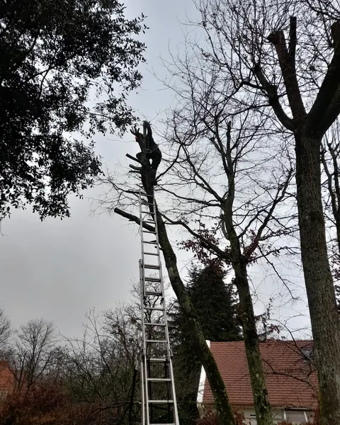
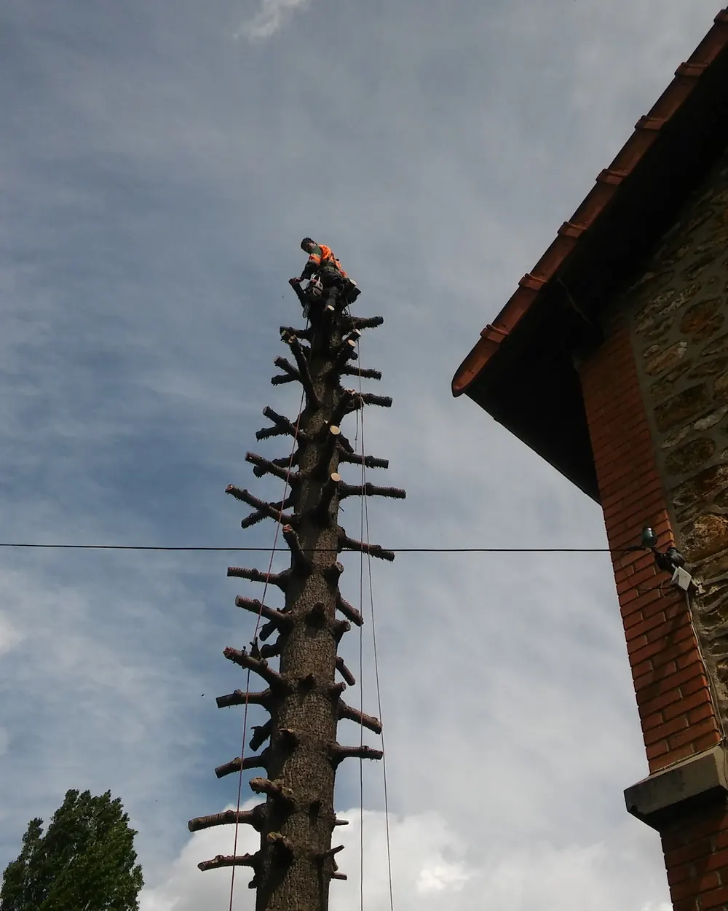
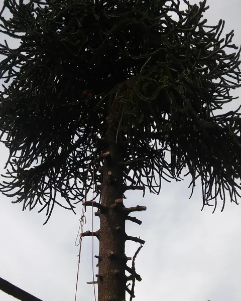
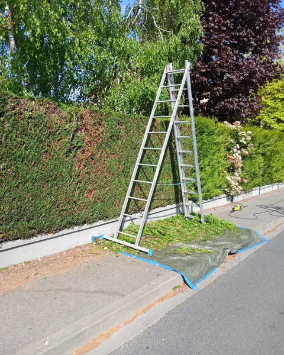
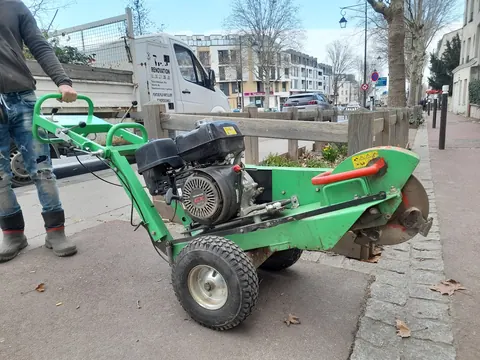
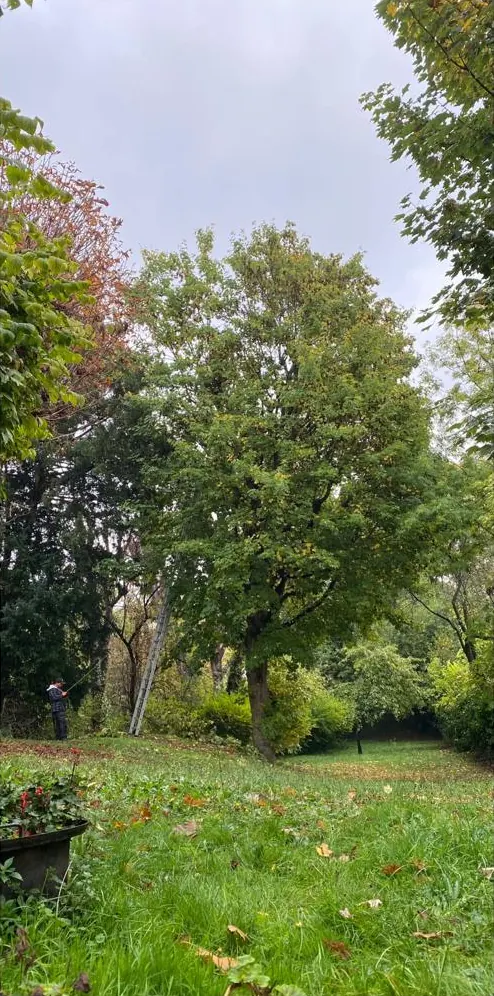
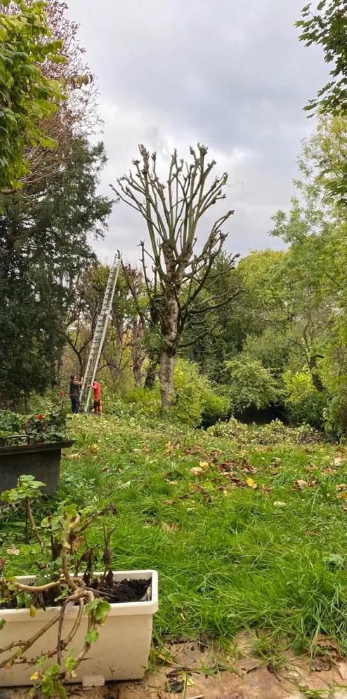
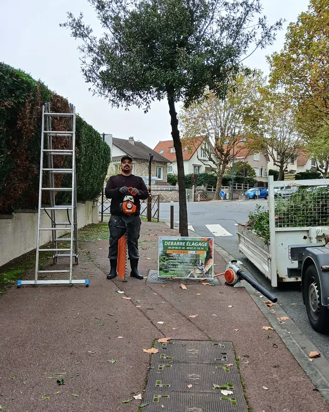

Élagage et taille
Réduction de couronne, éclaircie, bois mort, branches qui frottent le toit. On taille progressivement pour garder une silhouette naturelle.
Élagueur à Igny (91) · depuis 2009
Jérémy Debarre vient chez vous faire le devis, souvent le soir même. Son équipe taille, démonte ou abat vos arbres, même collés à la maison ou sous les fils, puis repart en laissant le jardin propre.
4,9 sur 5 · 50 avis Google
Prestations
Chaque arbre a sa technique. Jérémy regarde l'essence, l'état du bois, la place autour et ce que vous voulez garder, puis vous propose la taille ou l'abattage adapté.

Réduction de couronne, éclaircie, bois mort, branches qui frottent le toit. On taille progressivement pour garder une silhouette naturelle.

Abattage direct quand la place le permet. Démontage pièce par pièce quand l'arbre touche la maison, la véranda ou les câbles.

Thuyas, lauriers, charmilles, cyprès. Bâche au sol, taille nette sur le dessus et les côtés, trottoir rendu propre.

Après un abattage, la rogneuse broie la souche sous le niveau du sol. Vous pouvez engazonner ou replanter au même endroit.
Avant / après
Un grand arbre qui écrase le jardin, une couronne trop dense, des branches au-dessus de la pelouse. Faites glisser la poignée pour voir le résultat après le passage de l'équipe.
Ici, la couronne a été fortement réduite et tout le bois évacué. Le ciel réapparaît au-dessus du jardin.


Chantier Debarre Élagage en Essonne, octobre.
Comment ça se passe
Vous parlez directement au patron : c'est lui qui décroche et lui qui vient faire le devis.
Au 06 69 96 41 38, du lundi au samedi de 7h à 21h30. Ou par le formulaire en bas de page : réponse sous 24h.
Jérémy vient voir l'arbre, l'accès et les risques autour. Il vous conseille et vous remet un devis clair, sans engagement.
Cordes, harnais, échelles, rogneuse : l'équipe arrive équipée. Bâche au sol et règles de sécurité respectées, même dans un jardin étroit.
Branches et troncs évacués, coup de souffleur. Vous gardez le bois pour la cheminée ? On le débite et on le laisse en tas.
« Le patron est venu le soir pour faire son devis. Le lendemain matin, le travail était fini. 3 acacias coupés, les branches et troncs débarrassés, le produit sur les souches, un coup de soufflette pour nettoyer. »
Avis clients
Châtaignier centenaire, liquidambar de 10 mètres, arbre collé à une véranda : les clients décrivent leur chantier avec leurs mots. Avis recopiés depuis la fiche Google, sans retouche.
« J'ai fait appel à l'entreprise Debarre Elagage à Igny pour la taille d'un liquidambar de 10 m de haut. Travail parfaitement effectué. Equipe efficace, sympathique, professionnelle dans le respect des règles de sécurité. La taille a été faîte progressivement pour garder un aspect harmonieux de l'arbre en suivant mes recommandations. »
« M Debarre et son équipe sont venus élaguer notre châtaigner centenaire. Ils ont fait un travail très professionnel malgré l'accès exiguë à notre jardin, et nous ont fourni de précieux conseils pour entretenir nos espaces verts. »
« Abattage d'un arbre proche véranda et passage fils électrique. Très bon professionnel, travail réalisé dans les règles de l'art, chantier nettoyé. Devis respecté. Merci également pour vos conseils. »
« Ils ont travaillé avec beaucoup de professionnalisme et gentillesse. Le travail a été très bien fait. Ils m'ont laissé un jardin propre, c'est très appréciable. Monsieur Debarre connait parfaitement son métier, sait apporter de précieux conseils à ses clients. »
« J'ai fait appel à l'entreprise DEBARRE pour abattre 2 arbres. Le travail a été rapide et efficace. Le bois a été débité et laissé en tas et le chantier a été nettoyé. Artisan sérieux à recommander ! »
« Merci à Mr Debarre et son employé pour l'élagage de 4 arbres et taille de haie. J'ai apprécié leur professionalisme, leur rapidité d'exécution et divers conseils délivrés. Mon jardin a retrouvé de la clarté. »
Calendrier de l'élagueur
Les arbres ne se taillent pas tous à la même saison. Voici les repères que Jérémy donne au téléphone, mois par mois.
Repères généraux pour l'Île-de-France. Un arbre dangereux ou cassé par une tempête se traite à tout moment. Jérémy adapte au cas par cas selon l'essence, l'état de l'arbre et la météo.

L'artisan
Une entreprise individuelle, immatriculée en 2009, chemin de l'Écluse à Igny. Jérémy fait lui-même la visite et le devis, puis intervient avec son équipe.
Les clients parlent d'une entreprise familiale, de conseils donnés sur place et de délais tenus, même quand la météo s'en mêle. Le bois, les branches, la sciure : tout repart avec le camion, sauf ce que vous voulez garder.
Zone d'intervention
Basé à Igny, Jérémy intervient dans la vallée de la Bièvre, sur le plateau de Saclay et dans le sud des Hauts-de-Seine.
Votre commune n'apparaît pas ? Appelez quand même : on vous dit tout de suite si on peut venir.
06 69 96 41 38Questions fréquentes
Oui. Le déplacement et le devis sont gratuits et sans engagement. Vous êtes rappelé sous 24h, puis Jérémy passe voir l'arbre sur place pour chiffrer le travail.
Tout est ramassé et évacué avec le camion, puis le chantier est nettoyé au souffleur. Si vous voulez garder du bois de chauffage, l'équipe le débite et le laisse en tas à l'endroit que vous choisissez.
Oui, c'est une grande partie du métier. Quand l'arbre ne peut pas tomber d'un bloc, le grimpeur le démonte par le haut, morceau par morceau. Près d'une ligne électrique, Jérémy vous indique au devis si une démarche auprès d'Enedis est nécessaire avant l'intervention.
Souvent non. Mais si l'arbre est protégé par le plan local d'urbanisme de votre commune (espace boisé classé, arbre remarquable) ou si vous êtes en secteur protégé, une déclaration préalable en mairie peut être obligatoire. Le service urbanisme de votre mairie vous répondra.
Le Code civil (article 671) impose une distance de 2 mètres de la limite de propriété pour une plantation de plus de 2 mètres de haut, et de 50 centimètres pour une plantation plus basse. Le voisin peut aussi exiger que vous coupiez les branches qui avancent chez lui (article 673).
Debarre Élagage est agréé Services à la Personne. Les petits travaux de jardinage, comme la taille de haies et l'entretien, peuvent ouvrir droit à un crédit d'impôt de 50 %. Jérémy vous précise au devis quelles prestations y sont éligibles.
Devis gratuit sous 24h
Le plus rapide : un appel. Décrivez l'arbre et son emplacement, Jérémy vous propose un passage pour le devis.